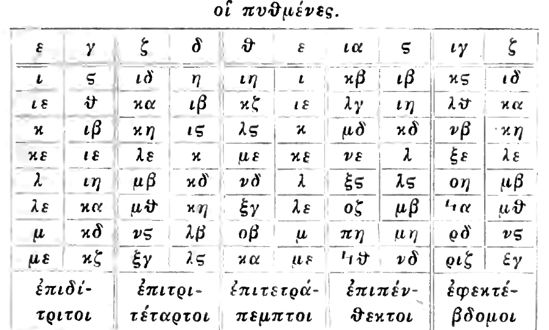

Chapter 21: Generation of Superpartients & Overview of Compound Species — Greek (Hoche 1866)¶
Ἀριθμητικὴ Εἰσαγωγή, Book I, Ch. 21 (ed. R. Hoche, Teubner, 1866)
κα. Τάξις δὲ ἀμφοτέρων καὶ ἀκόλουθος γένεσις εὑρίσκεται, ὅταν ἐκθέμενοι τοὺς ἀπὸ τριάδος ἑξῆς ἀρτίους καὶ περιττοὺς ἀριθμοὺς πρὸς τούτους συγκρίνωμεν τοὺς ἀπὸ πεντάδος καθαροὺς συνεχεῖς
f. 0075 · p. 57

περισσοὺς μόνους, πρῶτον πρὸς πρῶτον, οἷον τὸν ε πρὸς τὸν γ, καὶ δεύτερον πρὸς δεύτερον, οἷον τὸν ζ πρὸς τὸν δ, καὶ τρίτον πρὸς τρίτον, οἷον τὸν θ πρὸς τὸν ε, καὶ τέταρτον πρὸς τέταρτον, οἷον τὸν ια πρὸς τὸν ϛ, καὶ ἐφεξῆς τῇ αὐτῇ τάξει ἐφʼ ὁσονοῦν· οὕτως γὰρ εὔτακτα τὰ τοῦ ἐπιμεροῦς τε καὶ ὑπεπιμεροῦς εἴδη κατὰ τοὺς ἑκάστου πυθμένας δηλωθήσεται, ἐπιδιμερὲς πρῶτον, εἶτα ἐπιτριμερὲς καὶ ἐπιτετραμερὲς καὶ ἐπιπενταμερὲς καὶ ἐφεξῆς ἐπὶ πλέον παραπλησίως· μετὰ γὰρ τοὺς πυθμένας ἑκάστου γενήσονται οἱ συνεχεῖς διπλασιαζομένων ἀμφοτέρων τῶν ὅρων ἢ τριπλασιαζομένων καὶ ὅλως κατὰ τὰ τοῦ πολλαπλασίου εὔτακτα εἴδη μεγεθυνομένων.
ε |
γ |
ζ |
δ |
θ |
ε |
ια |
ϛ |
ιγ |
ζ |
|---|---|---|---|---|---|---|---|---|---|
ι |
ϛ |
ιδ |
η |
ιη |
ι |
κβ |
ιβ |
κϛ |
ιδ |
ιε |
θ |
κα |
ιβ |
κζ |
ιε |
λγ |
ιη |
λθ |
κα |
κ |
ιβ |
κη |
ιϚ |
λϛ |
κ |
μδ |
κδ |
νβ |
κη |
κε |
ιε |
λε |
κ |
με |
κε |
νε |
λ |
ξε |
λε |
λ |
ιη |
μβ |
κδ |
νδ |
λ |
ξϛ |
λϛ |
οη |
μβ |
λε |
κα |
μθ |
κη |
ξγ |
λε |
οζ |
μβ |
ϟα |
μθ |
μ |
κδ |
νϛ |
λβ |
οβ |
μ |
πη |
μη |
ρδ |
νϛ |
με |
κζ |
ξγ |
λϛ |
πα |
με |
ϟθ |
νδ |
ριζ |
ξγ |
(ἐπιδίτριτοι · ἐπιτριτέταρτοι · ἐπιτετράπεμπτοι · ἐπιπένθεκτοι · ἐφεκτέβδομοι)
f. 0076 · p. 58προσεκτέον δέ, ὅτι ἐκ μὲν τῶν δύο μερῶν τῶν πρὸς τῷ ὅλῳ ἐνόντων τῷ μείζονι τὸ τρίτον ὑπακούεται, ἐπὶ δὲ τῶν τριῶν τὸ τέταρτον, ἐπὶ δὲ τῶν τεσσάρων τὸ πέμπτον, ἐπὶ δὲ τῶν πέντε τὸ ἕκτον καὶ ἀεὶ οὕτως, ἵνα ἡ πρόβασις κατὰ τὴν ὀνομασίαν τοιαύτη τις ᾖ· ἐπιδίτριτος, ἐπιτριτέταρτος, ἐπιτετράπεμπτος, εἶτα ἐπιπένθεκτος καὶ παραπλησίως ἐπὶ τῶν λοιπῶν.
Αἱ μὲν οὖν τοῦ πρός τι ποσοῦ ἁπλαῖ καὶ ἀσύνθετοι σχέσεις αἵδε εἰσὶν αἱ προλεχθεῖσαι, αἱ δὲ σύνθετοι ἐξ αὐτῶν καὶ οἷον συμπλακεῖσαι ἐκ δυοῖν εἰς μίαν εἰσὶν αἵδε, ὧν πρόλογοι μὲν πολλαπλασιεπιμόριος καὶ πολλαπλασιεπιμερής, ὑπόλογοι δὲ αἱ εὐθὺς ἑκατέρᾳ τούτων συνυφιστάμεναι, σὺν τῇ ὑπὸ προθέσει ὀνομαζόμεναι, πολλαπλασιεπιμορίῳ μὲν ἡ ὑποπολλαπλασιεπιμόριος, πολλαπλασιεπιμερεῖ δὲ ἡ ὑποπολλαπλασιεπιμερής,
f. 0077 · p. 59καὶ καθʼ ὑποδιαίρεσιν τῶν γενῶν αἱ εἰδικαὶ ταῖς εἰδικαῖς ἀνθυπακούσονται, μετὰ τῆς ὑπὸ προθέσεως καὶ αὗται ὀνομαζόμεναι.